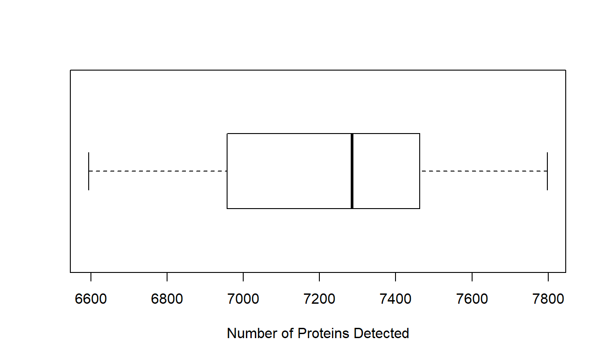

2.1 Number of Features Identified in Each Sample
To count the number of features identified in each sample, we use colSums to tally the number of entries that are not NA.
# Calculate the number of proteins
# identified (not NA) in each sample
plot_data <- pData(oca.set) %>%
mutate(num_proteins = colSums(!is.na(exprs(oca.set)))) %>%
# For the lollipop plot, it is best to sort num_peptides
# and preserve the ordering by converting the sample names
# to a factor. This is how we can specify the order of categorical
# variables in plots.
arrange(num_proteins) %>%
mutate(sample_name = rownames(.),
sample_name = factor(sample_name, levels = sample_name))
# Could also be accomplished with
# oca.set$num_proteins = colSums(!is.na(exprs(oca.set)))
# but we need to change the ordering for the lollipop plotThree methods of visualizing this information are presented below. We begin with the lollipop plot.
2.1.1 Lollipop Plot
Lollipop plots are similar to bar graphs, but they are composed of line segments terminating in points. They are a good alternative to bar graphs because they better minimize the amount of non-data ink. This doesn’t matter too much when figures are only made for digital media, but it still reduces the visual clutter that comes with bars; however, it is not a good alternative to stacked bar graphs. In ggplot, we can construct lollipop plots by combining a geom_segment() and a geom_point() layer.
# Lollipop plot
ggplot(plot_data) +
geom_segment(aes(x = 0, xend = num_proteins,
y = sample_name, yend = sample_name)) +
geom_point(aes(x = num_proteins, y = sample_name)) +
scale_x_continuous(name = "Number of Proteins Detected",
# Remove space between data and y axis
# (start lines at x = 0)
expand = expansion(mult = c(0, 0.05))) +
# Remove unnecessary y-axis title and the major y-axis grid lines
theme(axis.title.y = element_blank(),
panel.grid.major.y = element_blank())
In this case, using a lollipop plot is not a very good use of space. Notice that the plot is lengthened so that all of the sample names are readable, and the number of proteins detected in each is about the same; a lot of the space is just taken up by lines. In this case, it would be better to use a table or another plot type like a boxplot.
2.1.2 Boxplot
A boxplot is good for identifying and labeling potential outliers, but it is limited to displaying a summary of the data. We will be using graphics::boxplot() for this example, rather than the ggplot2 equivalent, because it is easier and the y-axis is uncluttered.
# Boxplot
boxplot(plot_data$num_proteins, horizontal = TRUE,
xlab = "Number of Proteins Detected", col = NA)
Notice that the boxplot takes up a lot less space, but it is less informative because we can not directly compare samples. Also, we lose a lot of the fine details of the shape of the distribution. To address the latter point, we can instead use a density plot.
2.1.3 Density Plot
A density plot is like a smoothed histogram. In fact, one of the benefits over the histogram is that we don’t have to deal with bins, as the choice of the number of bins can drastically change the overall shape of a histogram.
ggplot(plot_data) +
geom_density(aes(x = num_proteins),
# Change fill color, make it translucent, remove outline
fill = "lightblue", alpha = 0.5, color = NA) +
scale_x_continuous(name = "Number of Proteins Detected",
# Remove space between data and y axis
expand = expansion(mult = 0),
limits = c(NA, 7800),
breaks = seq(6600, 7800, 200)) +
scale_y_continuous(name = "Density",
# Remove space between data and x axis (start y axis at 0)
expand = expansion(mult = c(0, 0.05)),
# Use scientific notation for labels
labels = label_scientific()) +
theme_bw(base_size = 14) +
# Adjust plot margin so that the 7800 label is not cut off
theme(plot.margin = unit(c(6, 16, 6, 6), units = "pt"))
While outliers in a boxplot appear as points beyond the whiskers, outliers in density plots will appear as small bumps in the tails of the distribution. While there are no outliers, in this case, we can see that there are two peaks where the number of identified proteins are concentrated. This is not something that could be captured with a boxplot, so it is useful to try different plot types.